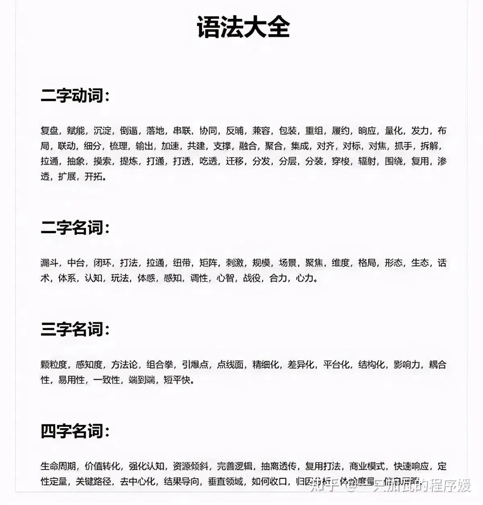

互联网黑话¶
扫盲区¶
想自学互联网却频频被黑话卡住？ 面试时听不懂黑话又不好意思提问？ 求职转行、工作汇报因为用不上黑话而显得不够专业？ 一键收藏，再用不慌！
一、行业相关¶
1、蓝海：肉多僧少
2、红海：僧多肉少
3、商业模式：怎么搞钱
4、老BAT：B-百度，A-阿里巴巴，T-腾讯。老牌互联网三巨头
5、新BAT：B-字节跳动（Bytedance），A-阿里巴巴，T-腾讯。字节崛起，撼动了原来百度在内容领域的地位
6、ATM：A-阿里巴巴，T-腾讯，M-美团。很长一段时间占据互联网市值前三
7、T-M-D：T-头条，M-美团，D-滴滴。继“BAT”后的三小巨头，几年前用的比较多：
头条与百度同为内容领域 美团与阿里同为消费领域 滴滴与腾讯都有“连接器”的功能 随着字节的崛起+滴滴的问题频出，现在已经很少将这三家并列了
二、公司别名¶
1、阿里：猫厂
2、腾讯：鹅厂
3、百度：熊厂
4、字节跳动：宇宙厂
5、美团：开水团
6、京东：狗厂
7、网易：猪厂
8、滴滴：桔厂
9、快手：铁厂
10、B站：电厂
11、爱奇艺：桃厂
12、搜狐：狐厂
13、华为：菊厂
14、小米：粮厂
还有一些不便发出来，大家自己体会...
三、岗位缩写¶
1、PM：Product Manager，产品经理
2、PM：Project Manager，项目经理
3、RD：Research&Development，研发
4、UED：User Experience Design，用户体验设计
5、UR：User Research，用户研究
6、UI：User Interface，用户界面
7、UE/UX：User Experience，用户体验
8、BD：Business Development，商务拓展
四、内容领域¶
1、KOL：Key Opinion Leader，关键人物或意见领袖，一般指内容平台上有话语权的人，俗称大V
2、KOC：Key Opinion Consumer，关键意见消费者。二者可以这样区分：KOL将分享作为职业，商业气息重，相比消费者，更贴近商家；KOC将分享作为兴趣，相比商家，更贴近消费者，因此受信程度更高
3、PGC：Professionally-generated Content，专业生产内容，即专业人士创作的内容
4、UGC：User-generated Content，用户生产内容。与PGC相辅相成，如果一家平台以PGC为主，则内容质量高，平台更加专业权威；如果以UGC为主，则内容数量大，平台氛围强，互动渗透高
5、OGC：Occupationally-generated Content，职业生产内容，即PGC和UGC以此为职业赚钱
6、PUGC：Professional-user-generated Content，专业用户生产内容。PGC与UGC相结合，兼顾PGC的深度和UGC的广度，以UGC的形式，产出相对接近PGC的内容。比如历史老师讲历史人物，医生普及急救常识，演员教大家配音等
五、电商领域¶
1、赋能：帮忙，包括“授之以鱼”和“授之以渔”
2、履约：履行约定的事，在电商一般指平台完成从用户下单到商品配送的全流程服务
3、B2B：Business to Business，即企业对企业，指企业之间通过网络进行信息交换或交易活动的模式。例如：阿里巴巴批发网（1688）
4、B2C：Business to Consumer，即企业对顾客，指商家直接面向消费者售卖产品或服务的模式。例如：天猫，京东，唯品会
5、C2C：Consumer to Consumer，即个人对个人，指消费者之间的电子商务行为。例如：闲鱼（阿里旗下二手电商平台）
6、O2O：Online to Offline，即线上到线下，指线上交易，然后到线下消费体验的模式。例如：美团，大众点评，饿了么
7、C2M：Customer to Manufacturer，即用户对制造，指由用户驱动生产的反向生产模式。再具体点，就是按照客户的产品订单要求，设定供应商和生产工序，最终生产出个性化产品的工业化定制模式。例如：必要，直播电商（依据粉丝的购买行为或在直播间的实时反馈，向供应端提出改进意见）
六、日常沟通¶
1、A端：开发界面
2、B端：商家界面
3、C端：用户界面
4、私域流量：你朋友圈的七大姑八大姨
5、生命周期：从怎么来的到怎么没的，常见有产品生命周期和用户生命周期
6、联动：联合他方资源共同完成某件事（往往1+1＞2）
7、复盘：从头到尾回顾并总结一遍
8、落地：对应“策划”，真正执行下去
9、对齐：我知道的，你也要知道
10、漏斗：各环节之间的折损情况
11、抓手：为完成目标，可能用到的资源、措施等
12、闭环：完整流程中的末位环节对首位环节也有一定影响
13、声量：品牌曝光，知名度
14、ABT：为Web或App界面等制作两个或多个版本，在同一时间维度，分别让组成成分相同（相似）的访客群组随机访问这些版本，收集各群组用户业务数据，最后分析出最优版本采用
15、BRD：Business Requirement Document，商业需求文档，决定是否做
16、MRD：Market Requirement Document，市场需求文档，决定如何做
17、PRD：Product Requirement Document，产品需求文档，决定做成什么样
七、产研相关¶
1、写死/可配：写死指客户端不发版就无法调整，可配置指服务端就可以调整
2、QPS：Queries Per Second，每秒查询。一台服务器每秒能够响应的查询次数，是对一个特定的查询服务器在规定时间内所处理流量多少的衡量标准
3、API：Application Programming Interface，应用程序编程接口，即给第三方使用的一套方法
八、数据/广告¶
1、DAU：Daily active user，日活跃用户数量，简称“日活”
2、MAU：Monthly active user，月活跃用户数量，简称“月活”
3、UV：Unique visitor，独立访客量
4、PV：Page view，页面浏览量
5、CAC：Customer Acquisition Cost，平均获客成本
6、CPM：Cost Per Mille，千次广告展现的费用
7、CPC：Cost Per Click，按广告被点击的次数计费
8、CPA：Cost Per Action，按用户行为计费，一般为注册行为
9、CPS：Cost Per Sell，按销售额获得分成费用
10、CPP：Cost Per Purchase，按交易笔数来结算
11、CPT：Cost Per Time，按某个时间段展示来计费
九、老板黑话¶
1、你来我办公室一下 = 老子又想到了绝妙的idea
2、得专注用户体验 = 界面画得好看点
3、产品气质不够年轻 = 饱和度通通调最高
4、产品气质不够成熟 = 界面通通做成黑的
5、产品不够大气 = 我也不知道哪里不好反正就是不好
6、要精致的感觉 = 抄苹果
7、要利用用户的固有习惯 = 抄同行
8、要追求流行设计趋势 = 抄微信/淘宝/滴滴…
9、你说的这是另一个问题=我说的才是对的
10、你说的跟我是一个意思=我说的才是对的
11、我们讨论的是两件事情=我说的才是对的
12、我们是弹性工作制 = 加班不给钱
13、我们是扁平化的管理 = 公司没几个人
14、我们会给你很多期权 = 不会给你很多工资
15、我们每天都有果盘！= 可能是公司唯一的福利了
16、当务之急是抢占市场 = 快狂发补贴
17、快速建立用户群体的壁垒 = 快拉他们进微信群
18、要让用户产生自发传播 = 快让他们转发朋友圈
19、为了健康发展我们要启动下轮融资 = 公司没钱了
20、我们辞退了一些跟不上公司发展的同事 = 公司没钱了
21、打补贴战其实不符合我们公司的理念 = 公司没钱了
十、招聘黑话¶
1、能承受较大的工作压力 = 加班
2、抗压能力强 = 加班+替别人扛雷
3、工作有激情 = 自觉加班还要特美
4、有强烈责任心 = 没做完不准走
5、弹性工作制 = 加班不给加班费
6、弹性工作制，但不保证准时下班 = 做完了才准备走
7、包三餐 = 早晚都得加班
8、双休 = 工作日加班
9、薪资+社保+带薪休假+职位晋升 = 是个正经公司都有，没什么拿得出手的福利
10、适应较快的工作节奏 = 加班把三天的工作两天做完
11、公司提供水果 = 貌似也就这一个福利
12、有强烈的上进心 = 干完工作就加班去干其他工作
13、喜欢有挑战性的工作 = 加班、前人留的坑不少
14、不提倡加班 = 你懂的（该加还得加，加班是因为你工作效率低，不是安排工作多）
15、不强制加班 = 你懂的 （不做完额外安排的工作你就走一个试试！）
16、上不封顶 = 下不保底
17、偶尔会忙 = 以后忙了你别抱怨，提醒过了
18、团队氛围很好 = 大家经常一起加班，一起吃加班餐，聊聊工作，多happy
19、上升空间大 = 工资低，3000元涨个50%不也就4500吗？
20、领导安排的其它任务 = 我叫你干啥你就得干啥
21、妹子多 = 这个屌丝虽然脑子不太好使但便宜，看看这个理由能不能骗一蛤
22、有期权 = 没多余的现金发工资给你
23、有股权 = 工资微妙地低于你应得的数，反正我不信你能干嘛拿走
24、年底双薪 = 13 薪
25、13 薪起 = 别想了，就是13 薪
26、年底有奖金 = 年薪大于 12 薪小于 13 薪
27、我们 6 点准时下班 - = 入职才知道最严重的早晨 6 点下班，回家吃早饭睡觉。
28、扁平化管理 - = 领导和你坐一屋，盯着你干活
29、核心团队来自 BAT = 嗯，你不是BAT的，所以你不是核心
30、"我把你的简历整理一下" = 对方说这个的话基本可以判断他是卖人头外派的了,把你的简历给他的甲方。
31、弹性工作时间 = 只弹下班（下班时间不固定），不弹上班
32、能独立完成任务 = 前端后端或产品测试推广运营全都你一个人干
33、领导好 = 看你顺眼就好，不顺眼就 XX ；你有生之年不可能有晋升的空间
34、XXX 比钱重要 = 钱达不到你的要求
35、公司会给你培训，但是工作之后你要交培训费 = 麻痹就是培训班
36、BAT 薪资 = 略微高于本地市场价
37、帮员工避税 = 按最低工资给你交社保公积金（五险一金）
38、我们是创业公司 = 有不少坑要填，另请做好加班拼命的准备
39、老板 /负责人不在，稍后会联系你的 = 面试不合格，不要抱期望了
40、期权激励拿到手软 = 希望能弥补你看到基本工资后的脚软
41、专注移动互联网，拥有几亿活跃用户 = 就注册了个微信公众号
42、有活力的技术团队 = 团队平均工作经验<1年
43、创始团队全部来自BAT = 在淘宝干过客服、自己玩过微信公众号、还在百度实过习
44、千亿市场的探索者 = 目前尚没看清具体市场在哪
45、扁平化管理，高度自由 = 全公司人数，一只手就数的过来。
46、典型欧美创业工作环境 = 办公室现处于毛坯房状态
47、新技术+新方向+新团队 = 嗯，目前这三样都没有
48、直进核心团队 = 公司尚未设置非核心团队岗
49、全方位成长机会 = 你有很大机会成为外卖超人
50、有机会晋升技术合伙人 = 现在就缺一个程序员来码代码了!
51、提供各种福利 = 每样细说咱就伤感情了
52、福利完善，待遇从优 = 严格按照法定节假日上班和……上班。
53、有完善的员工期权激励措施 = 所以对工资要求别太高。
54、提供住宿、班车及两餐 = 每周提供数小时时间与家人团聚
55、底薪+岗位绩效+职称奖+管理绩效+提成+五险 = 和在一块您看看够不56、够付这个月房租?
57、加入我们，给你足够大的发展空间！ = 目前公司规模<10人
58、女性员工占一半以上 = 创业公司的员工性别结构为:男生、女汉子以及别人的女友。
59、深受资本追捧，行业方向被投资人看好 = 又有几个同行拿到融资了，而他们还在追着投资人跑
60、大牛云集 = 我司属牛的同事比较多
61、与互联网大咖面对面，有巨大成长空间 = 加了个混充有某某大佬的微信群，常年潜水从不说话，好友更不加。
62、公司计划短期内上市 = 您也知道计划一般赶不上变化
63、徘徊在牛A和牛C之间一群人！ = 永不止步，从来没在牛B上停驻过
黑话的前世今生¶
如果要用一句话/一个词来证明，你是互联网人，那么，你第一时间会想到什么？
赋能？闭环？迭代？对齐? 链路? 抓手?
“你说这话的底层逻辑是什么？顶层设计在哪？最终交付价值是什么？过程的抓手在哪里？如何保证结果的闭环？”
oh，My God！在不知不觉中，我居然也被互联网黑话带走了节奏（好吧，为了证明我也是个互联网人）......
所谓隔行如隔山。每行都有每行的技术壁垒，专业术语，甚至是黑话，尤其是在互联网职场。
在互联网职场上，说的人“装X”，听的人就可能要“懵逼”（啊？什么鬼？）。
这不，前几日，就有媒体刊发了一篇题为《互联网大厂的黑话困局》的深度报道，批评“互联网公司不说人话”。
该文章一度在网络上引发热议，引起了不少网友的共鸣。
在这篇文章中，列出了不少让人啼笑皆非的例子。
例如，“我们接下来将在几号几点在XX发布什么内容，会用到XX微博账号……”；
用黑话说，则是“先开篇预热，拉高期待值……然后借势发酵，引起围观，为营销赋能……”。
这，是不是简单的表述变得复杂化了？
近年来形成的一系列互联网黑话，也造就了互联网人与众不同的气质--辨识“互联网人”，主要看气质。
甚至给人有种感觉，在互联网行业混，似乎不说几句互联网黑话装装b，都不好意思说自己是互联网人。
下面先给大家来感受一场传统节目《互联网贯口》：
UGC，转化，打法，闭环，生态，发力，导流，格局， 长尾，垂直，落地，干货，阈值，优化， 迭代，敏捷，评估，高优，体验，布局， 创新，痛点，价值，流量，数据，玩法， 体系，跟进，反哺，回顾，沉淀，一砥商业模式，插个需求，降维打法、头部、腰部、沉浸、生态、渠道下沉、头部、腰部、裂变、导流、测试、迭代、分发、逻辑、撬动、盘活、整合、操盘。
看到这些，什么感觉？好熟悉的味道，还是一脸懵逼（香菇难受）？
看来要想在互联网大厂如鱼得水，不懂点互联网黑话，还真的不行。
没事，我们继续来围观。
说不定你就可以摇身一变，成为互联网大厂的“装b king”。
例如，要表述“链条和路径”，但“链条”感觉听起来太low了，不够高大上，你要说「链路」。
“在网上卖”，看起来不够专业，你要说「抓住流量风口，布局线上新零售」。
“到处投广告”，你要说「全链路深度营销，矩阵式打法」。
再例如，北京后厂村的两位程序员在坐地铁时的对话：
「好惨，我今天早上挤地铁没有找到抓手。」
「那你应该把手举高高啊，上面有闭环。」
……
看到下面这张图，互联网人，是不是有种被命运击中了的感觉？

名字被改头换面了千万遍，但实质并没有改变。
互联网黑话，就像是新版“皇帝的新衣”，时不时要重新“包装”一下。
虽然大家都心知肚明，但是为了彰显你一直站在互联网的前列，你还必须得“故弄玄虚”一番，让别人有种“不明觉厉”之感。
例如，常被互联网人挂在嘴边的“赋能”一词。
在互联网，所有东西都能赋能。例如，AI赋能、品牌赋能……
但，其实这个词，早在20世纪80年代，就由美国学者提出。当时是用来解释种族问题，是个学术概念。
只是没想到，近40年后，这个词会在中国的互联网行业如此盛行。
惊不惊喜？意不意外？
最后¶
张一鸣在字节9周年年会上，念了一段报告来讽刺当下的「互联网八股」现象。
过去我们主要依靠推荐技术赋予的信息分发能力、跨端联动抖头西、分多个产品自研，实现深度共建，形成组合拳，打造内容生态闭环，以此赋能客户用户创造价值。未来我们要增加横向不同场景价值，延长服务链路。同时纵深满足用户需求，借助人类年龄的自然势能，在小中青多个年龄用户深度渗透。另外通过加强基建投入，多种阵地相关产品完善经营价值链路，建立对外用户持久影响力。
他说，「你对一个事情抽象，相当于思维上加杠杆。一旦这个杠杆加错，通常是“失之毫厘，谬以千里”」。
现在，张一鸣主动站出来指出这个现象，这不失为一件好事。
毕竟，语言文字的存在是为了沟通。只有将能达成“有效沟通”的词汇摆放在一起，才有意义。
不然，哪怕你说得再“高大上”，在别人看来，也不过是一场“假大空的话语艺术”（好了，好了，聊不下去了，话题终结吧！不然你会失去我的......）；
别人听了，也感觉只是「听了个寂寞」。
（好了，说人话，别装X了！）